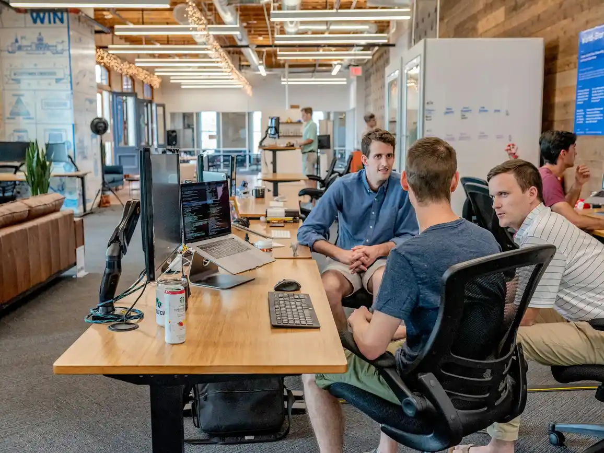
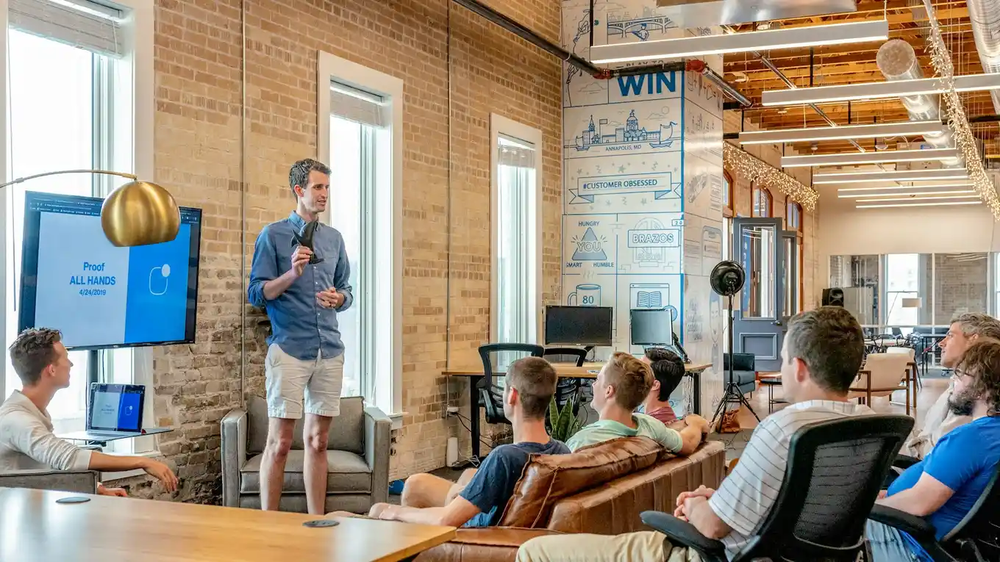

Listen
Understand the people, business and leadership context.

Human Resources Consulting
We help leaders connect people strategy with the choices that shape performance — from workforce planning and leadership capability to organization design and HR transformation.
02 / The Human Advantage
Organizational performance is not built on capital or process alone — it is sustained through clarity of roles, leadership capability, and intentional culture.
The strongest organizations do not treat people decisions as a separate HR agenda. They make leadership, structure, capability and employee experience part of the same strategic conversation.
03 / What We Solve
Roles, decision rights and accountabilities that are easier to understand and act on.
Practical development for leaders and managers facing real organizational complexity.
Critical roles, capability priorities, succession thinking and workforce choices.
04 / Our Consulting Perspective
We move from listening to action without losing the context that makes people decisions work in the real organization.
Understand the people, business and leadership context.
Separate the visible issue from the underlying system.
Build practical choices, structures and interventions.
Help leaders translate the work into everyday practice.
Learn, adjust and keep the work connected to outcomes.
05 / Talent & Workforce
Workforce choices become stronger when organizations can see the roles, capabilities and talent pathways that matter most to their future.

06 / Leadership & Culture
We help leaders turn expectations into capability, alignment and everyday behavior — without reducing culture to slogans.
07 / Organization Design
Good organization design makes accountabilities visible, decision paths clearer and collaboration more deliberate. The diagram here is a methodology illustration, not a client organization chart.
08 / Employee Experience
Employee experience is not a campaign. It is the accumulated effect of everyday systems, conversations and opportunities.
Enter with clarity, context and belonging.
Build the knowledge and capability to contribute.
Understand how work connects to the wider organization.
See meaningful pathways for development and responsibility.
Take responsibility for people, decisions and outcomes.
Leave, move or change role with dignity and clarity.
09 / HR Transformation
Transformation is not simply a technology project. It is a rethink of how HR decisions, services, data, capability and leadership fit together.
Map priorities, pain points, service experiences and capability constraints.
Prioritize the few changes that can make the broader system work better.
Bring the operating model together instead of solving each element in isolation.
Support leaders and teams as the new model becomes everyday practice.
10 / How We Work With Leaders
11 / Insights From the Practice
A practical lens for recognizing when the issue is larger than individual performance.
↗ WorkforceWhy headcount forecasts alone rarely explain the capability an organization will need.
↗ OrganizationClarity in roles and decisions can change how quickly a strategy becomes action.
↗12 / Questions Leaders Ask
Usually when a people issue has become important enough to require independent perspective, additional capacity or a more structured way to make a decision.
Look for recurring confusion around accountability, duplicated work, slow decisions, unclear interfaces or leadership effort spent coordinating rather than leading.
It should connect individual development to the situations leaders actually face: decisions, teams, change, conflict, priorities and organizational context.
Yes. Good planning does not require perfect prediction. It creates useful scenarios, identifies critical capabilities and clarifies the choices leaders can influence.
Clear ownership, connected processes, usable technology, capable teams and leaders who reinforce the new model after the project team leaves.
Build What Comes Next